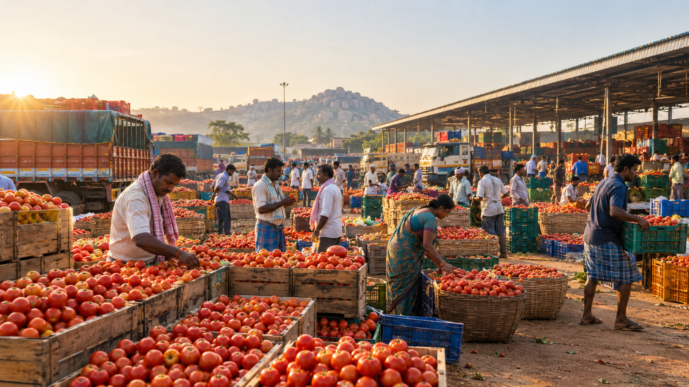

BUSINESSES
The businesses that made Kolar famous
Discover the trades, industries and local businesses that shaped Kolar's identity and continue to carry its stories forward.
BUSINESSES
Discover the trades, industries and local businesses that shaped Kolar's identity and continue to carry its stories forward.

Kolar is well known for its tomato production and busy agricultural markets, where farmers, traders and buyers come together every day.
Kolar APMC and surrounding farming regions
Fresh tomatoes and large-scale agricultural trade
Tomatoes traded beyond Kolar to markets across the region
Kolar's fertile agricultural regions have supported tomato farming for generations, helping the crop become an important part of the local economy.
Farmers across the district grow tomatoes on a large scale, while local agricultural markets connect them with traders and buyers.
Tomato trading remains an important part of Kolar's agricultural identity, bringing together farmers, traders and markets.